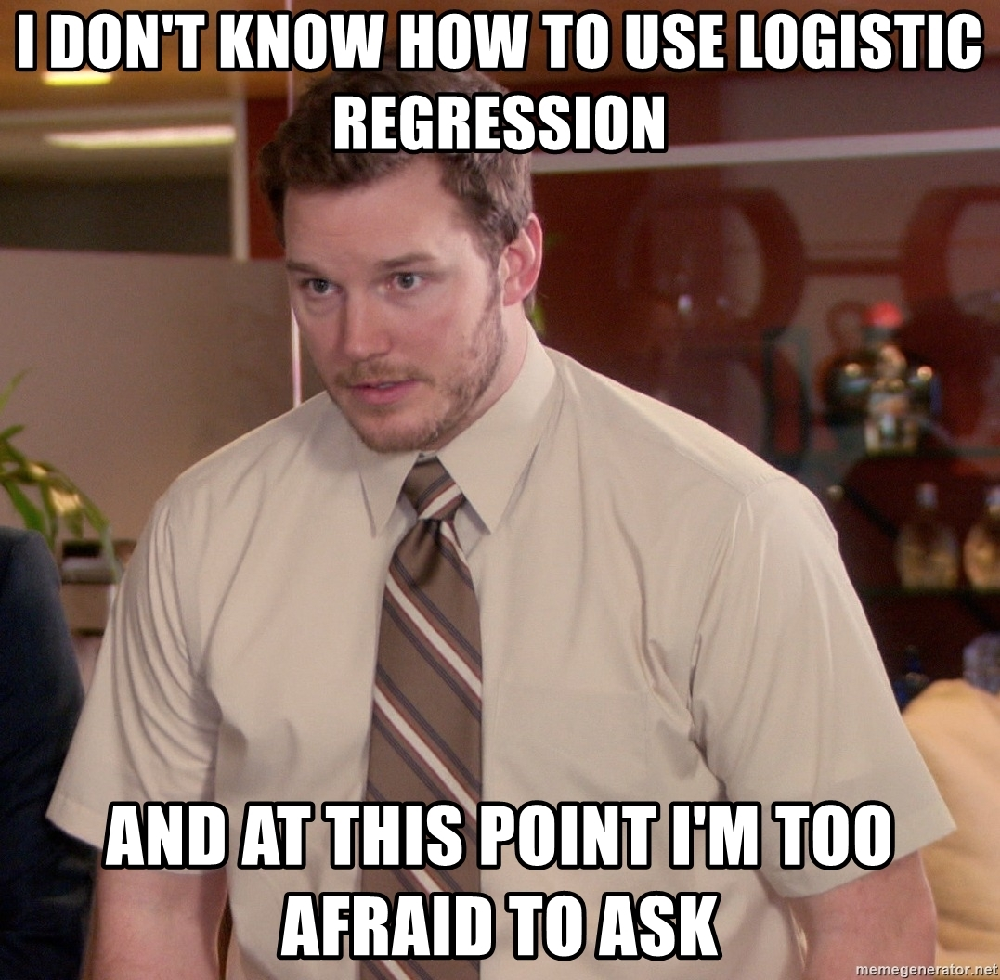

Interpreting Logistic Regression
Logistic regression is a classification method built on the same concept as linear regression. The advantage of logistic regression over other classification models is that logistic regression is a parametric linear model, which has a lot of explanatory power.

In classification problems, the response variable is categorical. The simplest case of classification is where the response variable is binary, meaning it can only take one of two values, such as true or false. Logistic regression takes a linear combination of explanatory variables plus an intercept term just like linear regression, but then it takes the result and passes it through the "logistic" function. The logistic function looks like an elongated S when plotted, opposed to the straight line in linear regression. Usually the middle point of that S curve, 50% probability, (unless decided otherwise) is the threshold were the cut off for belonging to either categories lies.

The aim of logistic regression is to predict some unknown probability P for a successful event, for any given linear combination of independent variables (features).
Logistic regression calculating log-odds or probability of a categorical response being "true" (1) is modeled as a linear combination of the features, however, using logit function:
log(p/(1-p))=B0+B1x1....+ BnXn or
p = 1 / 1 + e-(B0 + B1X1....+ BnXn)
In this case the coefficients (B) are the size and direction of the relation between the predictor (X) and the log odds of outcome, which when exponentiated gives the odds which can be used to calculate probability given the value of predictor. Same outcome can be achieved by running predict_proba__, which yields an array of 2 numbers, probability of 0 and probability of 1. The one that is higher than the threshold determines the classification outcome.
We can take the exponential of each of the coefficients to generate the odds ratios. This tells us how a 1 unit increase or decrease in a variable affects the odds of the outcome being 1 when other features are at fixed value.
Also, a large positive coefficient implies that high values of the corresponding feature push the probability towards 1 and a large negative coefficient implies that high values of the corresponding feature push the probability towards 0.
Equal odds are 1. 1 success for every 1 failure. 1:1 Equal probabilities are 0.5. 1 success for every 2 trials. Odds can range from 0 to infinity. Odds greater than 1 indicates success is more likely than failure. Odds less than 1 indicates failure is more likely than success. Probability can range from 0 to 1. Probability greater than 0.5 indicates success is more likely than failure. Probability less than 0.5 indicates failure is more likely than success.